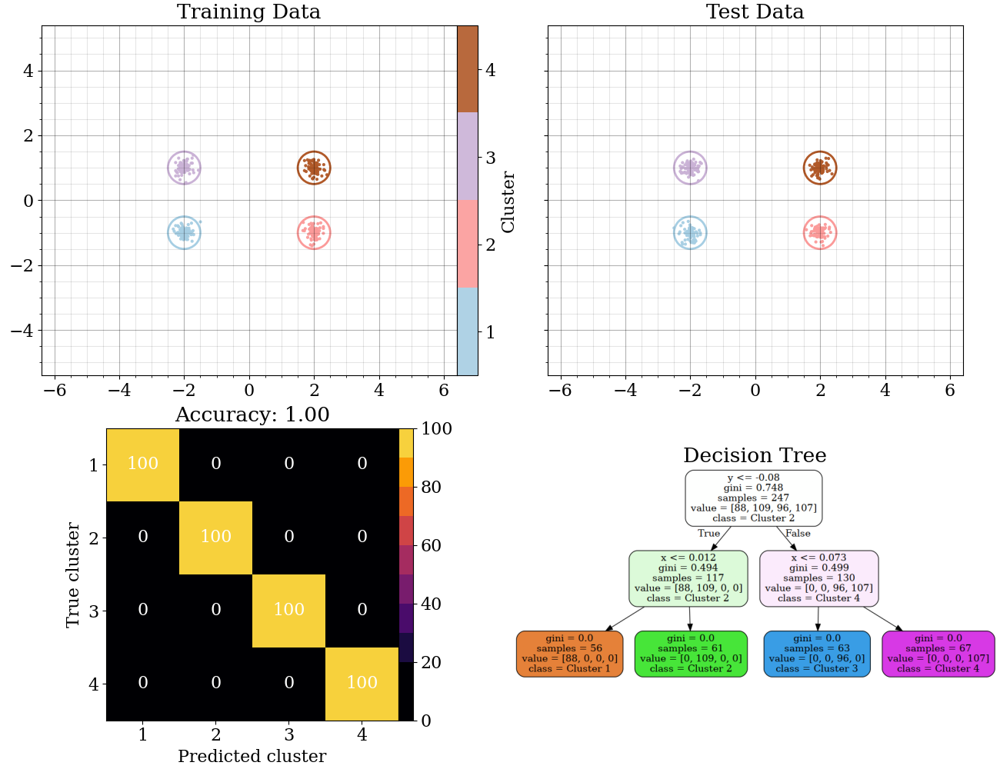

Decision Trees
Overview

Decision trees are a type of supervised learning algorithm that can be used for both classification and regression problems, and here we will apply them to attempt to classify our data. The simple idea behind the decision tree algorithm is to repeatedly split the data into smaller and smaller groupings until the data is organized into relatively discrete "leaves". If we know the labels that correspond to each leaf, we can then use this tree on data whose labels we don't know, applying the same splits to the new data until we reach a leaf which then allows us to assign a classification based on the label assigned to that leaf in training. This is visualized in the graphic at left, showcasing how a decision tree splits the data up based on a series of "decisions" until we reach the final "leaves".
As with many things, this is easiest to understand by visualizing a short example. The second graphic at left shows this process applied to a fake dataset, where four distinct clusters of 100 points each are generated. The points are generated for each cluster by drawing from Gaussian radial and uniform angular distribution functions to provide some variation in the data. Each point gets a label assigned to it corresponding to which cluster generated it, which we can use for training and then omit in testing (but use to check the accuracy).
From the perspective of a decision tree, every datapoint in this fake dataset is described entirely by two features — the x and y position of the point. Thus when partitioning the points into leaves, the decision tree algorithm will always choose to split the data into two groups based on the value of one of these features. This is a pretty clean example, where even by eye it is obvious that there are four distinct clusters, and we can see that the decision tree replicates this by eye logic quite well. The first node splits the data into two groups based on the if the y value of a point is roughly less than 0 (in the bottom half of the plot). If this condition is true (left branch), the next node splits the data into two groups based on if the x value of a given point is roughly less than zero (left half of the plot). If that condition is also satisifed (again moving to the left branch) we then end up with a leaf that contains all the points in the bottom left quadrant of the plot, which contains only points from the first cluster! You can apply this same logic to end up with the other three leaves and their classifcations. Thus, any new point fed into this tree in the bottom left quadrant would be predicted to belong to cluster 1, any point in the top right half predicted to belong to cluster 4, and so on.
This is a trivial example, but it's encouraging to see that the decision tree algorithm is able to crush this simple test case, as we can see in the resulting confusion matrix. No off diagonal elements there indicates that the algorithm was able to correctly classify every point in the testing set using the tree generated from the training data!
But how do we know what the best way to split up the data is? If our data has any spatial variation, there are an infinite number of arbitrary ways to impose splits (i.e. in our example above we could impose any vertical line to split the data into two groups based on the x value of a point). Thus, in general, it is possible to create an infinite number of trees. So how do we make sure we are picking a good one?

Ideally when splitting up our data, each resulting subset should be more distinct than the original set. The decision tree algorithm essentially maximizes for this — it finds the split that gives the largest increase in distinctness. Mathematically, this is usually determined by measuring the impurity of the resulting nodes from a proposed split, and in general we use one of two metrics to do this: Gini impurity or entropy. Entropy is a concept that comes from physics, and in simple terms is simply a measure of the disorder of a system. Thus an impure node with samples distributed randomly between classes will have a high entropy as their are many ways to arrange the samples and preserve the same distribution, but a pure node will ideally have all samples belonging to the same class, which is a remarkably low entropy state (in the ideal case there is only one way to distribute the samples and maintain a perfectly pure distribution). Gini impurity is a similar concept, but instead of measuring the disorder of a system, it measures the probability that a randomly chosen sample from a node will be incorrectly labeled. Thus, a pure node will have a Gini impurity of zero, while an impure node will have a Gini impurity of 1.
We have used the Gini impurity in our example from above, and can work through a simple example to verify the values reported on the tree there. We can see that the default label applied to the first node is "Cluster 2". Since at this point the data hasn't been split at all, we would expect a Gini impurity of: $$G = 1 - \sum_{i=1}^{n} p_i^2$$ where \(p_i\) is the probability of a sample being labeled as class \(i\) and \(n\) is the total number of classes. Since we have 400 samples and 100 of them are labeled as "Cluster 2", the chances that we get the labelling right are simply 1 in 4. Thus, at the head of the tree the Gini impurity will be: $$G = 1 - \sum_{i=1}^{4}\left(\frac{1}{4}\right)^2 = 1 - 4\left(\frac{1}{16}\right) = 0.75$$ Indeed we see that this is (to two significant figures) the value reported on the decision tree by the decision tree algorithm. Going to the next level in either direction splits the plot in half, so we should have half of our points on each node but also we now only have half the number of clusters, giving an expected Gini impurity of 0.5, which we see is again essentially what is reported on the tree. At the leaf nodes we have correctly classified all the points, and the Gini impurity goes to zero as expected.
Data preparation
Our cleaned data is already in pretty good shape for use by decision trees, so we really won't have to do much. For the disk-wind model data we're going to try to predict whether a given set of parameters produces a model with a single or double peaked emission line, so we'll drop the "rotation" label from the data and combine the "singlePeak" and "doublePeak" labels into a single classification label (i.e. instead of having two columns with booleans we'll just have a single column with the corresponding class string). We'll accomplish this in Python with the following code:
def genDTDataMCMC(cleanFile="../MCMC/data/combined_cleaned.csv"):
df = pd.read_csv(cleanFile)
columns2ignore = ["rotation","singlePeak","doublePeak"]
print("Reformatting input for DT")
print("\nGenerating labels...\n")
df["label"] = ['']*len(df)
for i in range(len(df)):
label = "singlePeak" if df["singlePeak"][i] == 1 else "doublePeak"
df["label"][i] = label
strLen = trackPercent(i,len(df),strLen)
df.drop(columns=columns2ignore,inplace=True)
print("\nSaving data...\n")
df.to_csv("DTMCMCData.csv",index=False)
We'll do something similar to the SDSS data, but here we have a few more things to ignore:
def genDTDataSDSS(cleanFile="../SDSS/combined_noSize_cleaned.csv"):
df = pd.read_csv(cleanFile)
if "noSize" in cleanFile:
columns2ignore = ["specObjID","plate","ra","dec","mjd","fiberid","run2d","objid",
"fieldID","redshiftError","spectroSynFluxIvar_u","spectroSynFluxIvar_g",
"spectroSynFluxIvar_r","spectroSynFluxIvar_z","spectroSynFluxIvar_i",
"err_u","err_g","err_r","err_i","err_z"]
else:
columns2ignore = ["specObjID","plate","ra","dec","mjd","fiberid","run2d","objid",
"fieldID","redshiftError","spectroSynFluxIvar_u","spectroSynFluxIvar_g",
"spectroSynFluxIvar_r","spectroSynFluxIvar_z","spectroSynFluxIvar_i",
"err_u","err_g","err_r","err_i","err_z","petroRadErr_u","petroRadErr_g",
"petroRadErr_r","petroRadErr_z","petroRadErr_i"]
print("Reformatting input for DT")
df.drop(columns=columns2ignore,inplace=True)
print("\nsaving data")
out = "DTSDSS_noSizeData.csv" if "noSize" in cleanFile else "DTSDSS_wSizeData.csv"
df.to_csv(out,index=False)
After formatting the data, we will also need to split the data into training and testing sets. We will train our ML models with a subset of the data, then test how the models perform by feeding them the remaining data and seeing how well they can predict the labels. We will use the train_test_split function from the scikit-learn library to do this, i.e. for the SDSS data we would do something like:
df = pd.read_csv("DTSDSS_wSizeData.csv")
X = df.drop(columns=["class"]) #the features in the data (everything but the label)
Y = df["class"] #the label
Xtrain,Xtest,Ytrain,Ytest = train_test_split(X,Y,test_size=0.3) #split the data into training (70%) and testing (30%) sets, randomly selected from the full shuffled dataset
A sample of what the training data looks like is shown below (X & Y are concatenated to display in a single table with Y being the leftmost column). Note that this is also then a representative sample of what the prepared data for decision trees looks like, and the testing dataset is likewise very similar (although disjoint from the training data). It's important that they be disjoint because we don't want our model to "cheat" and learn the labels of the testing data from the training data — we want to see how well it can generalize to new data.
Full data product samples for all the datasets (including the splits into training and testing) are available at the GitHub repo for this project.
Code
The full code for generating the data and running the decision tree algorithm, both as a single tree and as a random forest ensemble of trees, is available at the GitHub repo for the project, but the heart of this code is very simple with the help of sklearn:
def genResults(DTfile = "DTMCMCData.csv",testSize=0.3,forest=False,maxDepth=3):
df = pd.read_csv(DTfile)
if "MCMC" in DTfile:
X = df.drop(columns=["label"])
Y = df["label"]
else:
X = df.drop(columns=["class"])
Y = df["class"]
Xtrain,Xtest,Ytrain,Ytest = train_test_split(X,Y,test_size=testSize)
if forest:
clf = RandomForestClassifier()
else:
clf = tree.DecisionTreeClassifier()
clf.fit(Xtrain,Ytrain)
Ypred = clf.predict(Xtest)
accuracy = accuracy_score(Ytest,Ypred)
print("Accuracy: {:.2f}".format(accuracy))
if forest:
features = X.columns
feature_importances = pd.Series(clf.feature_importances_,index=features)
feature_importances_string = ""
for feature in features:
feature_importances_string += "{}: {:.2f}\n".format(feature,feature_importances[feature])
print("Feature importances:\n"+feature_importances_string)
else:
names = [c for c in X.columns]
export_graphviz(clf,out_file="tree.dot",feature_names=names,class_names=clf.classes_,filled=True,rounded=True,fontname="DejaVu Serif",max_depth=maxDepth)
treeName = "DT_MCMC" if "MCMC" in DTfile else ("DT_SDSS_noSize" if "noSize" in DTfile else "DT_SDSS_wSize")
graphviz.render("dot",filepath="tree.dot",format="png",outfile=treeName+".png")
return Ytest,Ypred,accuracy
The code here is pretty straightforward — first we read in the data (formatted as described above), tell it which column is the label, split it into disjoint training and testing sets, then create the decision tree by running the algorithm on the training data. We can then test the resulting classifier by predicting the labels for the testing data and comparing them to the actual labels. The accuracy of the classifier is simply the fraction of the testing data that was correctly classified. The code above works for both a single decision tree and a "random forest" ensemble of trees, which is a more robust prediction method that involves aggregating the results of many possible decision trees, each created from a random subset of the training data and utilizing a random subset of the data features. This helps to avoid overfitting the data and also allows us to get a sense of which features are most important for the classification, but is harder to interpet when compared with a single tree. Thus at the end of the process the code spits out the accuracy score as well as a decision tree if we're using a single tree, or the feature importances in the case of using an ensemble of trees.
Results
When running the decision tree algorithm on the DiskWind data we were able to achieve a test accuracy of 91% when using a single tree, and 94% when using a random forest ensemble. When running the algorithm on the SDSS data (with and without sizes) we achieved a test accuracy 98% from a single tree and 99% when using a random forest ensemble. Note that this depends a litle bit on what fraction of the data we train versus test with, but it seems even putting just 10% of the data into the training set allows for good classifications of the testing set. The confusion matrices for the single trees are shown below:
Confusion matrices for single decision tree classifications. From left to right: DiskWind model data, SDSS data (with sizes), and SDSS data (noSizes).
Confusion matrices for ensemble random forest decision tree classifications. From left to right: DiskWind model data, SDSS data (with sizes), and SDSS data (noSizes).
Conclusions
As the results above show us, all three of our datasets are pretty well suited to decision tree predictive methods. The predictions are particularly robust in the case of the SDSS data, where we were able to achieve 98% accuracy with a single tree and 99% accuracy with a random forest ensemble. The SDSS data are roughly evenly distributed among classification type, but the DiskWind data are skewed towards single peaked models (which make up roughly 70% of the data), and this may explain in part why the accuracy is lower for the DiskWind classifier. We can see this clearly from the confusion matrices above, and this makes the probability of correctly classifying a single peaked model higher than a double peaked model. While the overall accuracy for the double peaked model is still quite good, it's important to think about and quantify this kind of potential bias. Interestingly, while in the single tree classifier the errors are relatively symmetric (i.e. the number of single peaked models misclassified as double peaked is roughly equal to the number of double peaked models misclassified as single peaked), when using the random forest classifier the error rate of single peaks being misclassified as double peaks is cut roughly in half, further improving the chances of accurately determining whether a given set of parameters will produce a single peaked line profile.
In the case of the SDSS data, it's interesting to note that the accuracy doesn't change when we include the size information, which we can clearly see from the confusion matrices. These also tell us some interesting trends. First, while the overall accuracy for all objects is very high, almost no quasars are misclassified as stars, which is encouraging to see as these objects are fundamentally intrinsically very different than stars. A few more galaxies and stars are misclassified as each other, as it can be difficult to tell a faint star from a small, faint galaxy, but overall these numbers are also negligible. The largest source of confusion by an order of magnitude is between quasars and galaxies, which is not surprising as they have the most in common intrinsically, but even here the accuracy is still roughly 97%. It's also interesting to note that the misclassifications that do exist appear to be symmetric, i.e. objects that are actually quasars are misidentified as galaxies at the same rate that objects that are actually galaxies are misidentified as quasars. When using the random forest classifier this again breaks this symmetry — when using a random forest we are more likely to misclassify a quasar as a galaxy and galaxies as stars than the other way around for either, and the resulting misclassification reductions are primarily responsible for the increase in overall accuracy.
This tells us that we can, with high confidence, predict if a certain set of parameters will produce a single peak line profile in the DiskWind model, and whether an object is a star, galaxy, or quasar in SDSS data, assuming we have measured its photometric properties, spectroscopic properties, and redshift. Note that this last item is really what is key for the SDSS data — when using the random forest classifier the feature importance of the redshift is roughly 0.4, which is four times higher than the next most important feature. This is not surprising, as the redshift is a measure of the distance to the object, and thus is a powerful predictor of whether the object is either a star (generally very close) or quasar (generally very far away). If we take this away the accuracy drops to 91% for the dataset without sizes fit to a single tree and 94% for the random forest ensemble, which is still surprsingly good given the importance of the redshift. For the dataset with sizes these values also drop to 91% and 94% for a single tree and random forest ensemble, respectively. The confusion matrices are similar when we do this, except that now there are a small (but significant) number of quasars that are misclassified as stars and vice versa, which is not surprising given that the name quasar originates from "quasi-stellar object" and they are thus very star-like in purely optical observations.
The feature importances for the DiskWind dataset are more nuanced, but show us that the most important features are the inclination, the mean size of the disk, the \(f_1\) and \(f_4\) wind parameters, and the power-law index of the line emission, which is what we predicted we might observe from analytical arguments at the beginning of the project. Note that the mass is actually one of the smallest feature importances, which may seem surprising but is actually expected — although the mass is perhaps the most fundamental property for the DiskWind model, it has no say in what shape the line profile takes (which is what we're trying to predict here), only its overall size and strength.